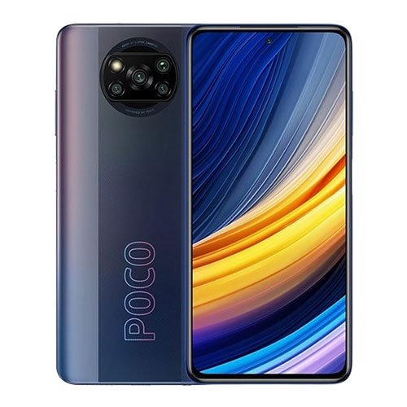

Xiaomi

Xiaomi Poco X3 Pro
OPŠTE KARAKTERISTIKE: Operativni sistem Android 11 Procesor i grafika Broj jezgara procesora: 8 (Octa Core) Tip procesora: ARM Opis procesora: Octa-core (1x2.96 GHz Kryo 485 Gold & 3x2.42 GHz Kryo 485 Gold & 4x1.78 Čipset: Qualcomm Snapdragon 860 (7 nm) Grafika: Adreno 640Tip ekrana IPS Ekran Ekran osetljiv na dodir: Da Dijagonala ekrana: 6.67" Rezolucija: 2400 x 1080 Gustina ekrana ~395 ppi Dual sim Da Ram memorija 8GB Interna memorija 256GB Slot za memorijsku karticu Da Formati: microSD (Trans Flash),Maximalno podržano : 512 GB Zadnja kamera Zadnja kamera: 48 Mpix + 8 Mpix + 2 Mpix + 2 Mpix Opis zadnje kamere: 48 MP, f/1.8, (wide), 1/2.0", 0.8µm, PDAF 8 MP, f/2.2, 119˚ (ultrawide), 1.0µm 2 MP, f/2.4, (macro) Dual-LED flash, HDR, panorama Video : 4K@30fps, 1080p@30/60/120/240fps, 1080p@960fps, gyro-EIS Prednja kamera 20.0 Mpix Opis prednje kamere: 20 MP, f/2.2, (wide), 1/3.4", 0.8µm HDR, panorama Video : 1080p@30fps Ostale karakteristike Senzori : Otisak prsta (bočno postavljen), akcelerometar, žiroskop,senzor blizine, kompas WiFi: Wi-Fi 802.11 a/b/g/n/ac Navigacija: (Geopozicioniranje) A-GPS, GLONASS, BDS, GALILEO Bluetooth v5.0 Radio: Da USB: USB 2.0 Tip-C NFC: Da Infrared port: Da Izlaz za slušalice: Standardni 3.5 mm Brzo punjenje: Da Snaga brzog punjenja: 33W Otpornost na prašinu i vodu: IP53 Tastatura: Touch Baterija 5160 mAh Boja Plava Mreža 3G 4G Spoljašnje karakteristike Dimenzije: 165.3 x 76.8 x 9.4 mm Masa: 215 g Garancija 2 Godine